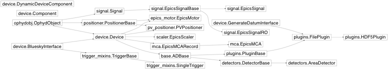

Project Architecture¶
This is the class inheritance diagram for the key pieces of ophyd. This is a selection meant to give a readable and representative picture of the package’s organization.

Device classes use metaclass magic to inspect and lazily instantiate their
Components. The examples illustrate how easy it is to define new kinds of
devices, and this is largely because the “dirty work” of handling connections
is hidden in the Component and ComponentMeta. To understand further,
read the source code of device.py or contact the developers.